About Us
Our inspiration comes from the children and families we serve.

For close to a hundred years now the HealthCare name has been synonymous
with Trust. Trust that has been won and retained by successive
generations of Peerless people, who have made it their Mission to give
back to the Society more than what it draws from it for sustenance. To
us, HealthCare is much more than a mere name, it is a way of life, it what
we strive to be, in everything we do, at all points in time. Being
HealthCare is a means to an end, not the end in itself.
The 400 bed
Multi-Specialty HealthCare Hospital is build
around this core principle of Selfless, Single-minded and Sustainable
Service. A pioneering status in the healthcare domain in the Eastern
parts of India with what was, and continues to be, a world class
facility backed by some of the most acclaimed medical practitioners in
their respective fields of excellence and a clinic of caregivers who
raises the bar of nursing on a daily basis, HealthCare continues to set
goals in excellence only to surpass them. As a matter of fact, in the
last year and a half itself, the Hospital has gone through a major inter
functional and multidimensional revamp process, aimed at ensuring that
its infrastructure remain cutting edge.
The Emergency Section, which often marks the difference between life and death, has been equipped with a dedicated operation theatre, is manned by emergency consultants on a 24 X 7 basis; is backed by a new fleet of ambulances and necessary life saving infrastructural facilities. This has resulted in a substantial reduction in the response time in this 19 bed amenity, increasing the success rate of critical care manifold.
The Thalassaemia Clinic has been refurbished with HPLC and is now able to offer organ specific iron overload detection facilities with the installation of a 1.5T MRI. The attached Blood Bank too has been upgraded to move beyond the mere storing of blood and is now capable of offering blood components like fresh / frozen plasma, packed cells and platelets – all vital inputs in the fight against the dreaded disease.
The Central Sterile Supply Department (CSSD), the kernel from which springs the sapling of freedom against germs and differentiates a truly great hospital from the others has also been upgraded to global standards with the introduction of a number of key equipments and the adoption of acknowledged best practices.
 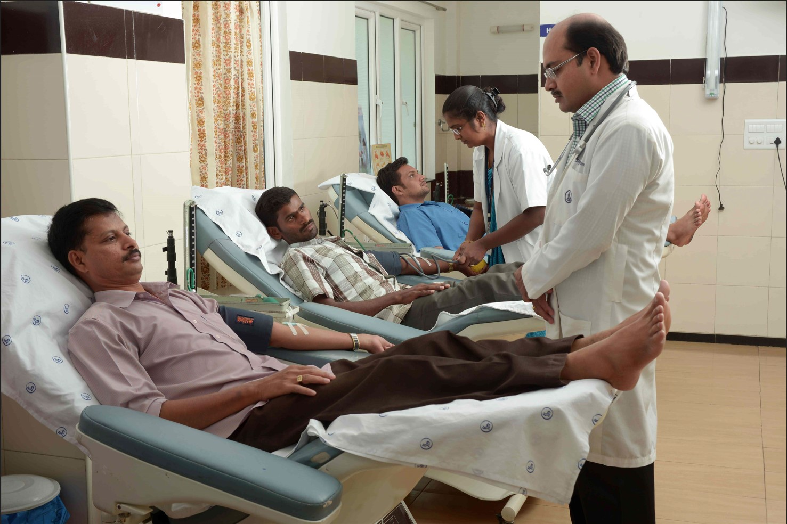
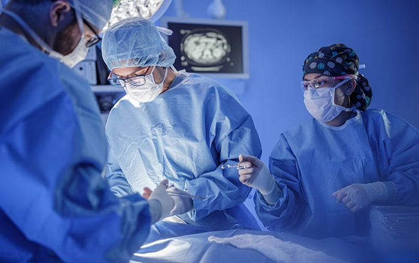
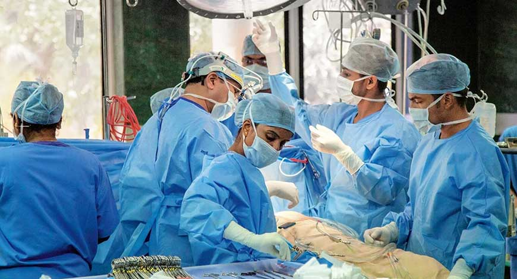
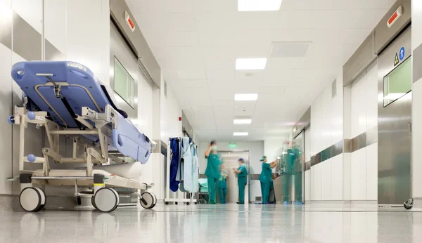
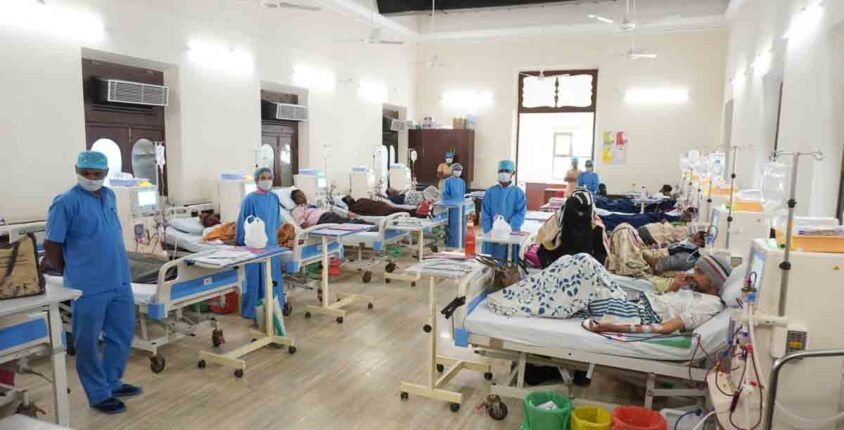
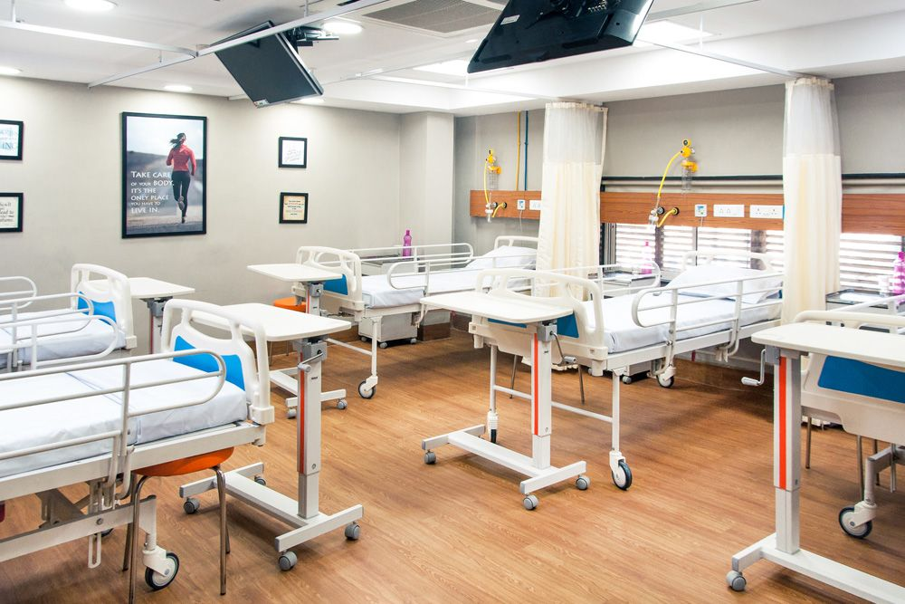
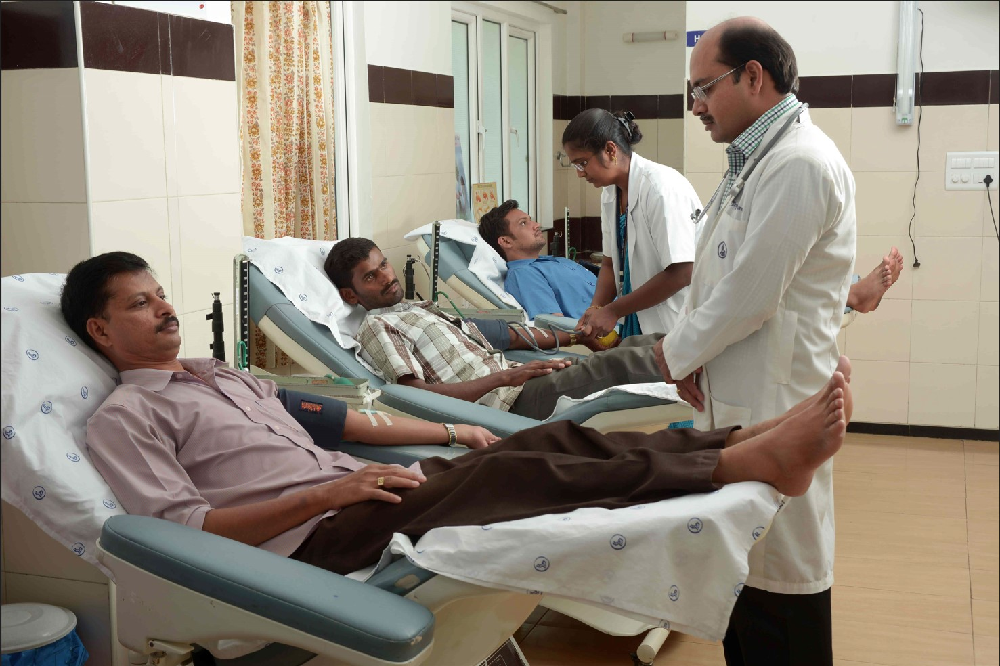
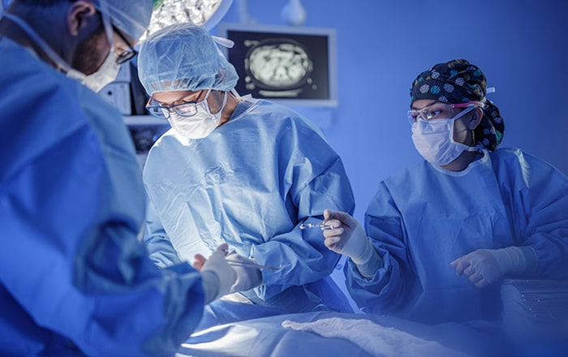
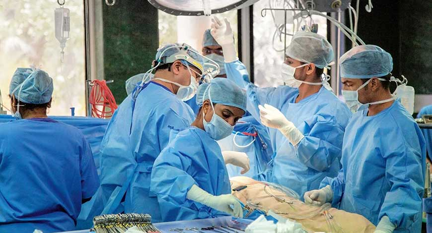
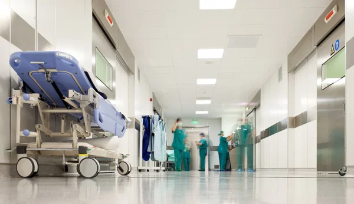
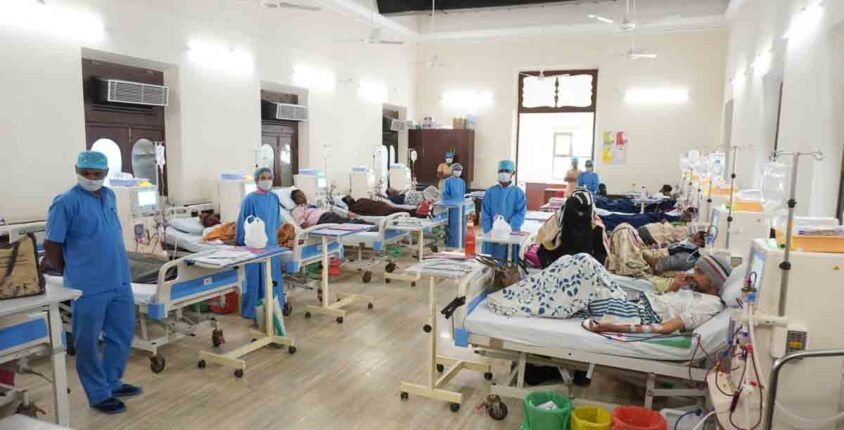
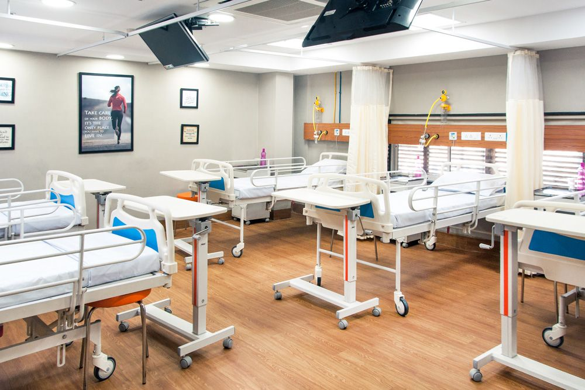
 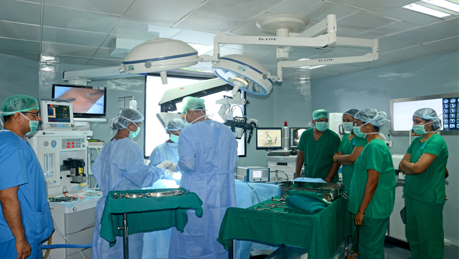
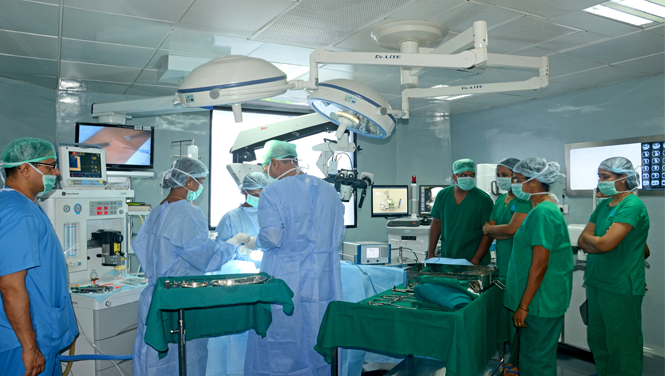